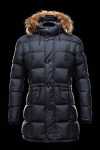

Такие куртки - идеальный вариант для тех, кому приходится работать на свежем воздухе. Однако такие куртки далеко не всегда выступают в качестве рабочей одежды, в последнее время пуховики разной степени защиты невероятно популярны. В контексте городской моды стилисты рекомендуют выбирать модели из твида темных тонов, однако серьезным бизнесменам, адвокатам мужчинам, занимающим высокие должности, от таких курток лучше отказаться. Модели ярких, контрастных цветов уместны разве что на горнолыжном курорте. Куртки на синтепоне или пуховой подкладке уместны в повседневной жизни, к деловому костюму лучше подобрать что-то более классическое. Хороший качественный пуховик стоит недешево, но такая вещь вполне оправдывает свою стоимость, с такой курткой вам будет нипочем даже самый холодный ветер

Куртка-парка или анорак
Когда-то парка считалась частью военного обмундирования, но со временем она прекрасно адаптировалась в качестве стильной и практичной единицы современного мужского гардероба. В свое время американская армия решила взять «на вооружение» эскимосскую парку, такая одежда была идеальным вариантом для длительного пребывания на свежем воздухе в условиях военных операций. В итоге парка постепенно перешла на гражданку, а в 1970-80-х годах превратилась в неотъемлемый атрибут студентов и «ботаников». После некоторого спада популярности, парка снова вернулась в мужской гардероб, сегодня ее особо «уважают» хипстеры и носят обычные мужчины, ценящие комфорт и практичность. Парка – это удлиненная куртка, шьются парки из самых разных материалов, что в свою очередь отражается на весе и дизайне модели, но независимо от ткани, парка – идеальный вариант для сочетания с другими вещами. В холодный день под парку можно надеть даже толстый свитер, в теплый осенний или весенний день легкую парку из хлопка можно накинуть прямо на рубашку